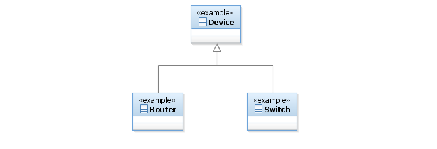

SID Models::Resource Domain::Resource ABE::_Resource Addendum Figuers::Figure LR.14 - A Simple (but Bad) Approach to Modeling Types of Devices Diagram Figure LR.14 - A Simple (but Bad) Approach to Modeling Types of Devices The PhysicalResource and the Party model, have made extensive use of roles (see [Bäumer] and [Fowler-Roles] for more information on this powerful abstraction mechanism). Roles can once again be used to simplify the modeling of different types of Resources and to make the model inherently more extensible. This is especially true in the modeling of network devices, since any given modern network device (such as a router) can take on multiple roles and perform different functions. If roles aren’t used, then the model becomes ponderous and unmanageable.To see the value of the role pattern, consider a modern-day router. Assume that we want to model a (layer 2) Switch and a Router as types of LogicalDevices. The basic difference between a Switch and a Router is that the former forwards traffic, while the latter routes and forwards traffic. This could be simplistically modeled as shown in the Figure below:

Properties:
View
Name
Figure LR.14 - A Simple (but Bad) Approach to Modeling Types of Devices